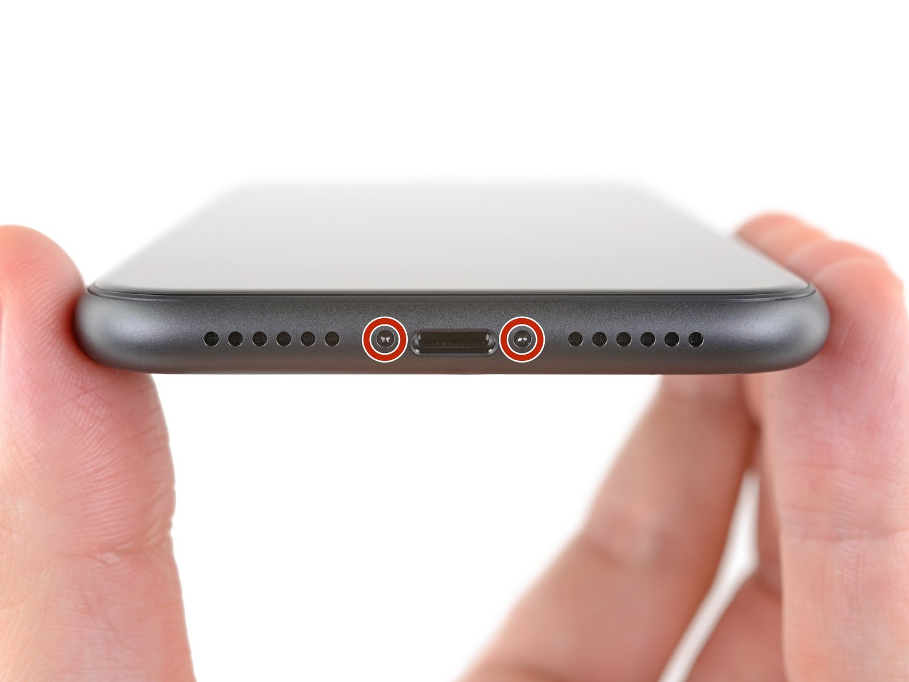
iPhone 11
Open the model-specific battery replacement tutorial with repair photos and safety notes.
View iPhone 11 guideModel-Specific Repair Library
Select the exact iPhone model for battery removal instructions. Discharge the battery below 25%, protect internal connectors, and keep every screw in its original position.
33 model guides are currently available in this category.
Open the full site map
Open the model-specific battery replacement tutorial with repair photos and safety notes.
View iPhone 11 guide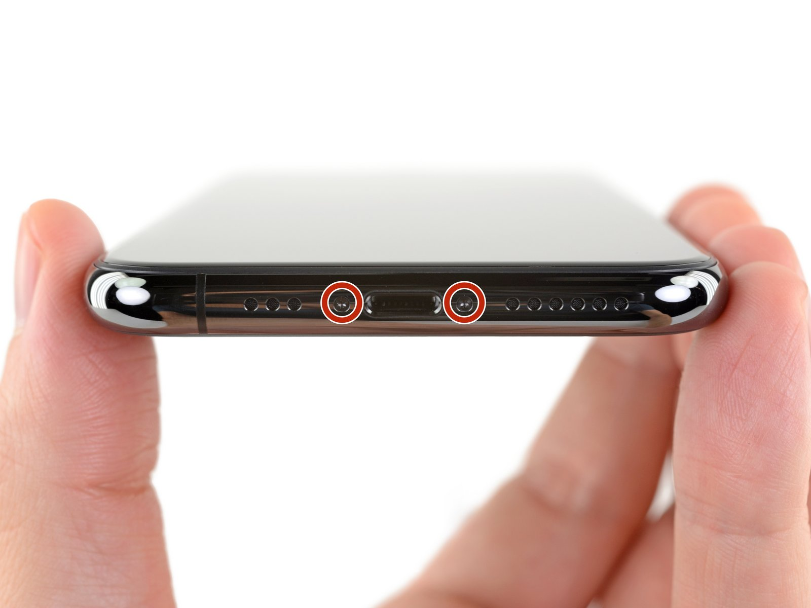
Open the model-specific battery replacement tutorial with repair photos and safety notes.
View iPhone 11 Pro guide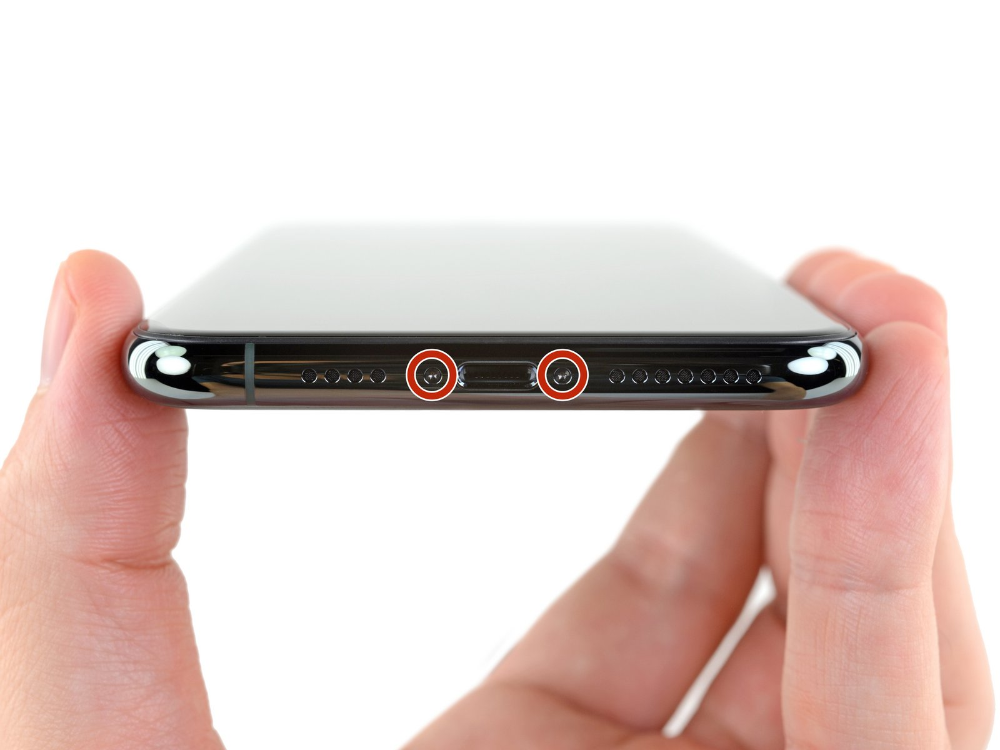
Open the model-specific battery replacement tutorial with repair photos and safety notes.
View iPhone 11 Pro Max guide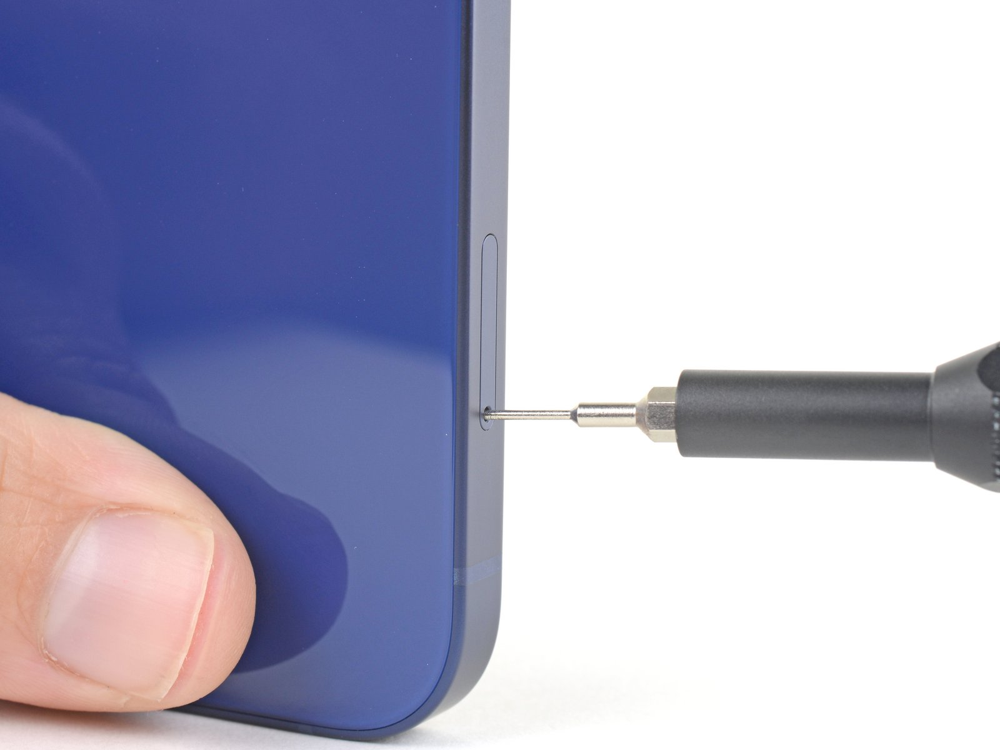
Open the model-specific battery replacement tutorial with repair photos and safety notes.
View iPhone 12 guideOpen the model-specific battery replacement tutorial with repair photos and safety notes.
View iPhone 12 mini guide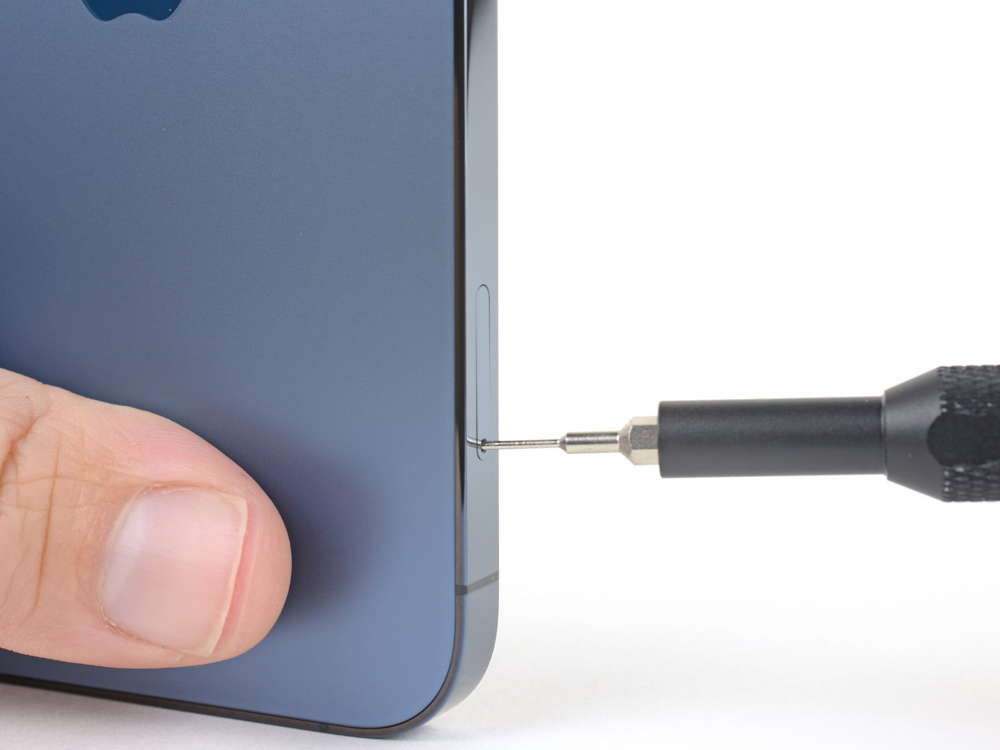
Open the model-specific battery replacement tutorial with repair photos and safety notes.
View iPhone 12 Pro guideOpen the model-specific battery replacement tutorial with repair photos and safety notes.
View iPhone 12 Pro Max guide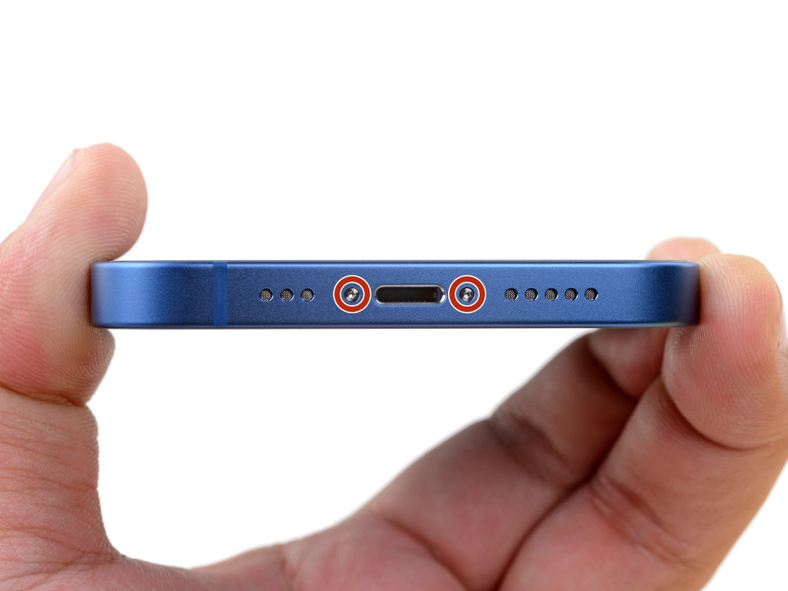
Open the model-specific battery replacement tutorial with repair photos and safety notes.
View iPhone 13 guide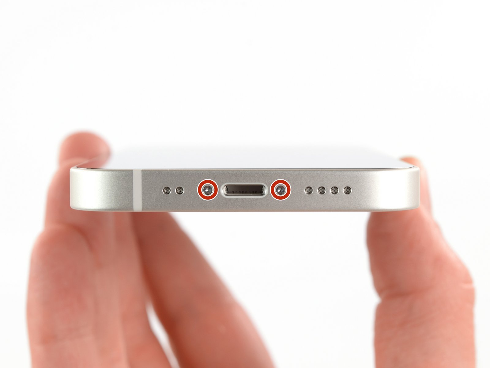
Open the model-specific battery replacement tutorial with repair photos and safety notes.
View iPhone 13 mini guide
Open the model-specific battery replacement tutorial with repair photos and safety notes.
View iPhone 13 Pro guide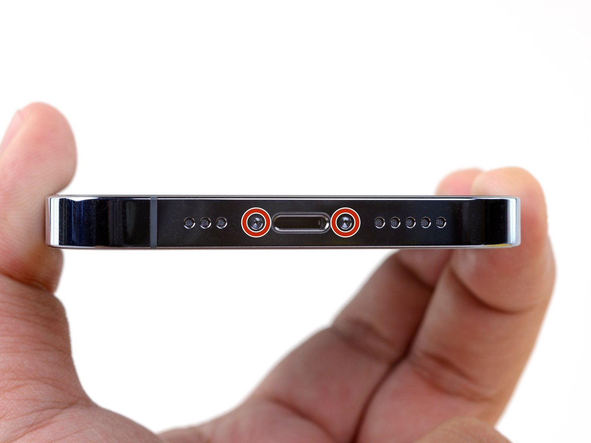
Open the model-specific battery replacement tutorial with repair photos and safety notes.
View iPhone 13 Pro Max guide
Open the model-specific battery replacement tutorial with repair photos and safety notes.
View iPhone 14 guide
Open the model-specific battery replacement tutorial with repair photos and safety notes.
View iPhone 14 plus guideOpen the model-specific battery replacement tutorial with repair photos and safety notes.
View iPhone 14 Pro guide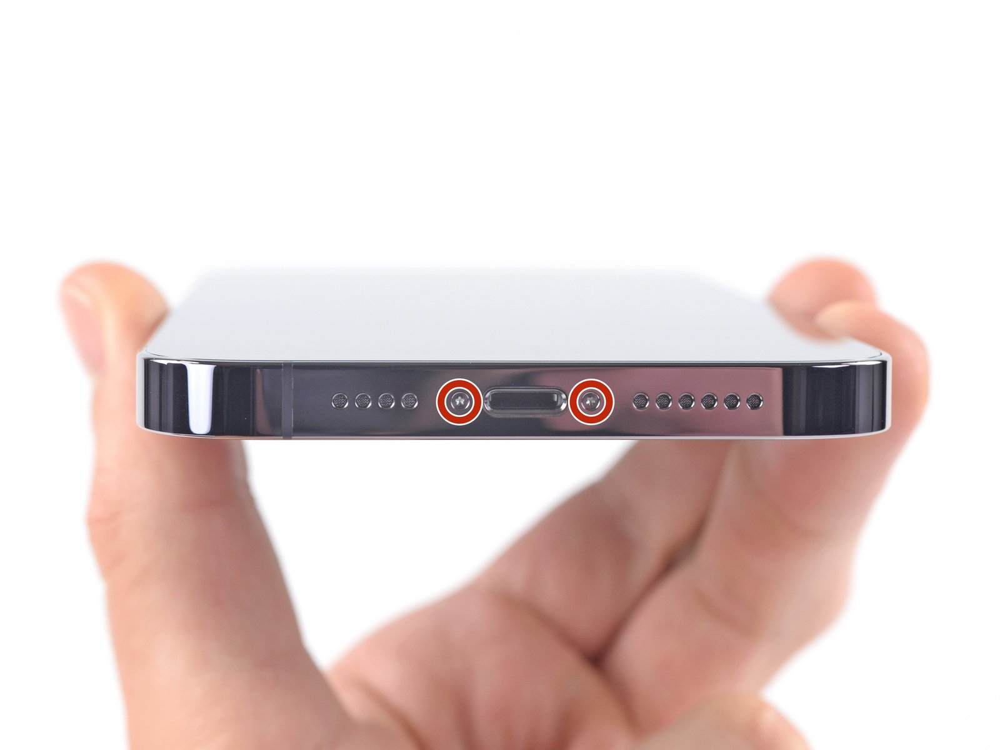
Open the model-specific battery replacement tutorial with repair photos and safety notes.
View iPhone 14 Pro Max guide
Open the model-specific battery replacement tutorial with repair photos and safety notes.
View iPhone 15 guide
Open the model-specific battery replacement tutorial with repair photos and safety notes.
View iPhone 15 plus guide
Open the model-specific battery replacement tutorial with repair photos and safety notes.
View iPhone 15 Pro guide
Open the model-specific battery replacement tutorial with repair photos and safety notes.
View iPhone 15 Pro Max guide
Open the model-specific battery replacement tutorial with repair photos and safety notes.
View iPhone 16 guide
Open the model-specific battery replacement tutorial with repair photos and safety notes.
View iPhone 16 plus guide
Open the model-specific battery replacement tutorial with repair photos and safety notes.
View iPhone 16 Pro guide
Open the model-specific battery replacement tutorial with repair photos and safety notes.
View iPhone 16 Pro Max guide
Open the model-specific battery replacement tutorial with repair photos and safety notes.
View iPhone 16e guide
Open the model-specific battery replacement tutorial with repair photos and safety notes.
View iPhone 17 guide
Open the model-specific battery replacement tutorial with repair photos and safety notes.
View iPhone 17 Pro guide
Open the model-specific battery replacement tutorial with repair photos and safety notes.
View iPhone 17 Pro Max guide
Open the model-specific battery replacement tutorial with repair photos and safety notes.
View iPhone 17e guide
Open the model-specific battery replacement tutorial with repair photos and safety notes.
View iPhone Air guideOpen the model-specific battery replacement tutorial with repair photos and safety notes.
View iPhone x guide
Open the model-specific battery replacement tutorial with repair photos and safety notes.
View iPhone XR guide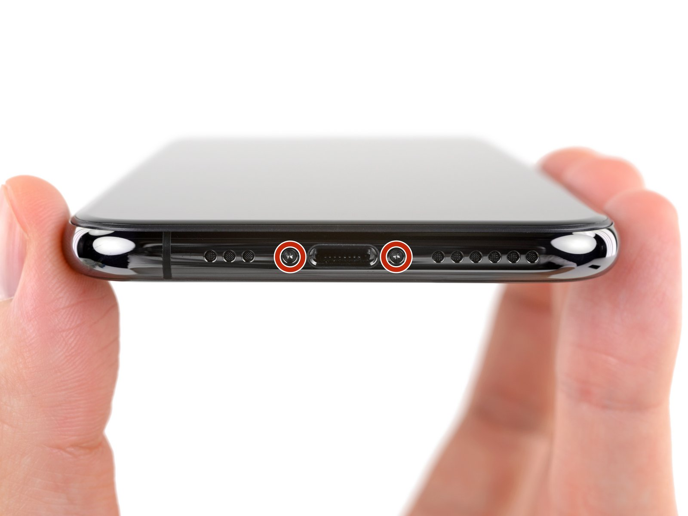
Open the model-specific battery replacement tutorial with repair photos and safety notes.
View iPhone XS guide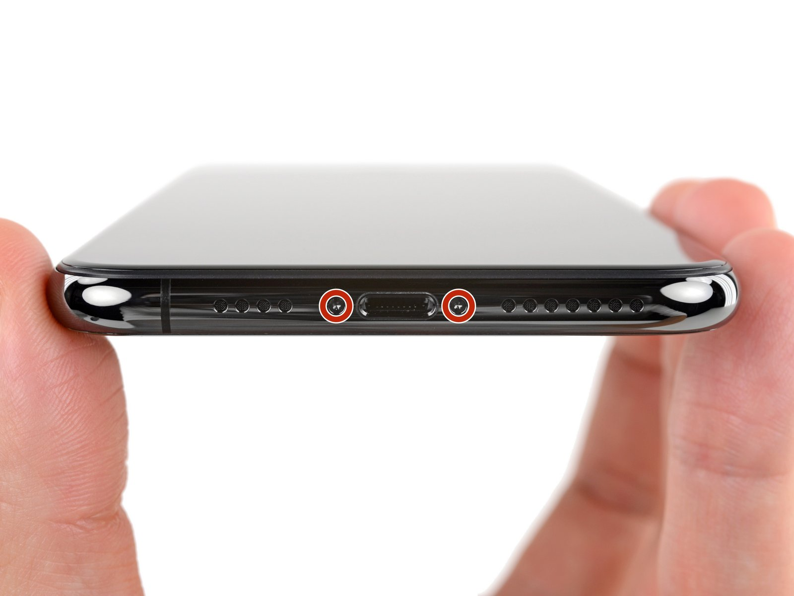
Open the model-specific battery replacement tutorial with repair photos and safety notes.
View iPhone XS Max guide